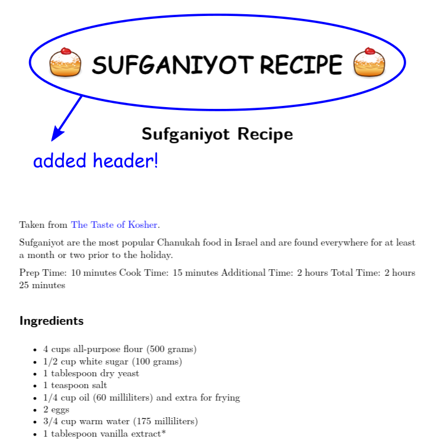

Load the package and example file
Load the cpp11qpdf package and set the path to an example PDF file included with R for demonstration purposes.
library(cpp11qpdf)
input_pdf <- system.file("examples", "sufganiyot.pdf", package = "cpp11qpdf")Compressing a PDF
To compress a PDF file, use the pdf_compress function. This function takes an input PDF file and an output file path.
output_pdf <- tempfile(fileext = ".pdf")
pdf_compress(input_pdf, output_pdf, password = "")
#> [1] "/tmp/RtmpEqR14K/file78f1b7a44b60b.pdf"
file.exists(output_pdf)
#> [1] TRUERotating Pages in a PDF
To rotate pages in a PDF, use the pdf_rotate_pages function. This function takes an input PDF file, the pages to rotate, the angle of rotation, and the output file path.
output_pdf <- tempfile(fileext = ".pdf")
pdf_rotate_pages(input_pdf, pages = 1, angle = 90, output = output_pdf,
password = "")
#> [1] "/tmp/RtmpEqR14K/file78f1b700623ab.pdf"
file.exists(output_pdf)
#> [1] TRUESplitting a PDF
To split a PDF into individual pages, use the pdf_split function. This function takes an input PDF file and an output file prefix.
Combining Multiple PDFs
To combine multiple PDF files into a single PDF, use the pdf_combine function. This function takes a vector of input PDF files and an output file path.
# using the output files from the previous example
output_pdf <- tempfile(fileext = ".pdf")
pdf_combine(output_files, output_pdf, password = "")
#> [1] "/tmp/RtmpEqR14K/file78f1b29103767.pdf"
file.exists(output_pdf)
#> [1] TRUEExtracting Pages from a PDF
To extract specific pages from a PDF, use the pdf_subset function. This function takes an input PDF file, the pages to extract, and the output file path.
output_pdf <- tempfile(fileext = ".pdf")
pdf_subset(input_pdf, 1, output_pdf, password = "")
#> [1] "/tmp/RtmpEqR14K/file78f1b33109ca8.pdf"
file.exists(output_pdf)
#> [1] TRUEOverlaying a Stamp on a PDF
To overlay a stamp on each page of a PDF, use the pdf_overlay_stamp function. This function takes an input PDF file, a stamp PDF file, and the output file path.
stamp_pdf <- system.file("examples", "header.pdf", package = "cpp11qpdf")
output_pdf <- tempfile(fileext = ".pdf")
pdf_overlay_stamp(input_pdf, stamp_pdf, output_pdf, password = "")
#> [1] "/tmp/RtmpEqR14K/file78f1b50b7d400.pdf"
file.exists(output_pdf)
#> [1] TRUENow the pages have a header that is not a part of the original PDF.
